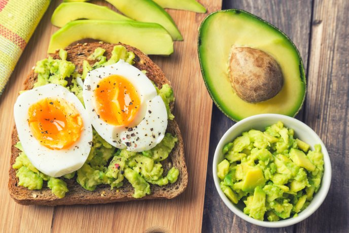
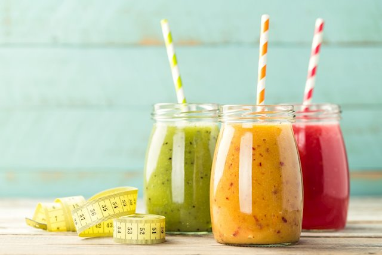

Comidas Favoritas
Desayunos
10 de Septiembre de 2019
Las proteínas son macromoléculas compuestas por aminoácidos y traen varios
beneficios a nuestro organismo como aportar energía, reparar tejidos en nuestra piel y órganos,
reforzar el sistema inmunológico, facilitar la digestión y distribuir el oxígeno en la sangre, entre
otros beneficios.
Algunos alimentos que contienen proteínas son la carne, huevo,
legumbres, frutos secos, cereales y verduras, por lo que hoy compartiré
contigo siete desayunos sencillos con proteínas que te darán mucha energía durante todo el día.
Camila15: Me encantan los jugos del dia los sigo continuamente excelentes consejos.
 Nick40: Los ejercicios son bastante
intensos he visto resultados a corto plazo.
Nick40: Los ejercicios son bastante
intensos he visto resultados a corto plazo.
Patuu-: Los visito a diario tienen buena actualizacion de contenido gracias.
Jugos
5 de Septiembre de 2019
Los jugos Detox con frutas, zumos y sin azúcar se han puesto de moda desde hace un
tiempo porque prometen eliminar las malas toxinas del cuerpo y te convierten en una persona más
sana. Pero ¿es realmente así.
¿Qué le pasa a tu cuerpo cuando tomas jugos Detox?
Si solo bebes zumo durante una semana, perderás peso, pero es porque no estás comiendo, no porque tu
cuerpo se esté “desintoxicando”. Cuando comes una dieta baja en calorías, consumes reservas de
glucógeno de tus músculos y pierdes el peso del agua. Por eso en cuanto vuelvas a tu dieta normal,
recuperarás el peso.
Otro de los efectos es que estás perdiendo nutrientes vitales como la grasa, la fibra y las
proteínas. Por eso, algunas de estas dietas sugieren que evites hacer ejercicio porque tu ingesta
calórica es muy baja y te puedes desmayar.
Después de unos días, tu cuerpo no tiene de dónde sacar energía, y sin proteínas, tu cuerpo podría
comenzar a descomponer el tejido muscular. Del mismo modo, la falta de fibra en tu dieta puede
afectar a la función del intestino grueso, lo que podría explicar por qué las personas tienden a
sufrir diarreas.
"Beber nada más que zumo durante tres o cinco días no te llevará directamente al hospital o tendrá
consecuencias negativas irreversibles, pero es algo completamente innecesario", refirió
Bellatti.
Nuestros cuerpos eliminan toxinas a diario gracias a los riñones, los pulmones y el hígado.
Enforma10: Interesante estaba pensando
realizarlos pero es mejor el ejercicio.
PeterPan: Realmente te puedes ayudar con
ellos pero sin abusar de ello.
Maravillaaa: Me han funcionado los he hecho varias veces; mas que positivos.